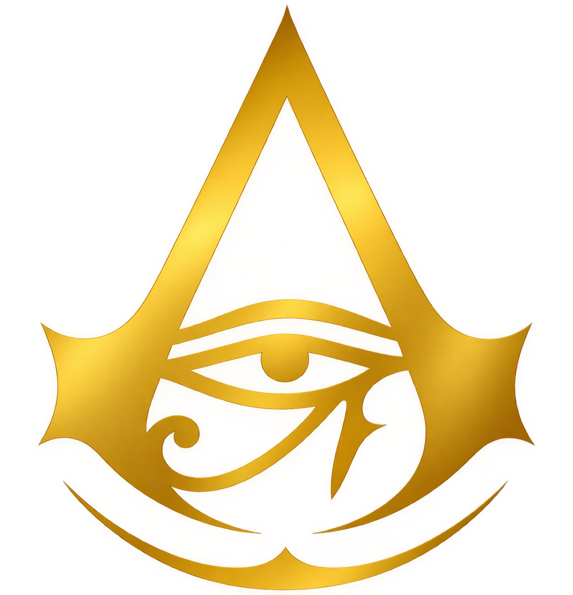
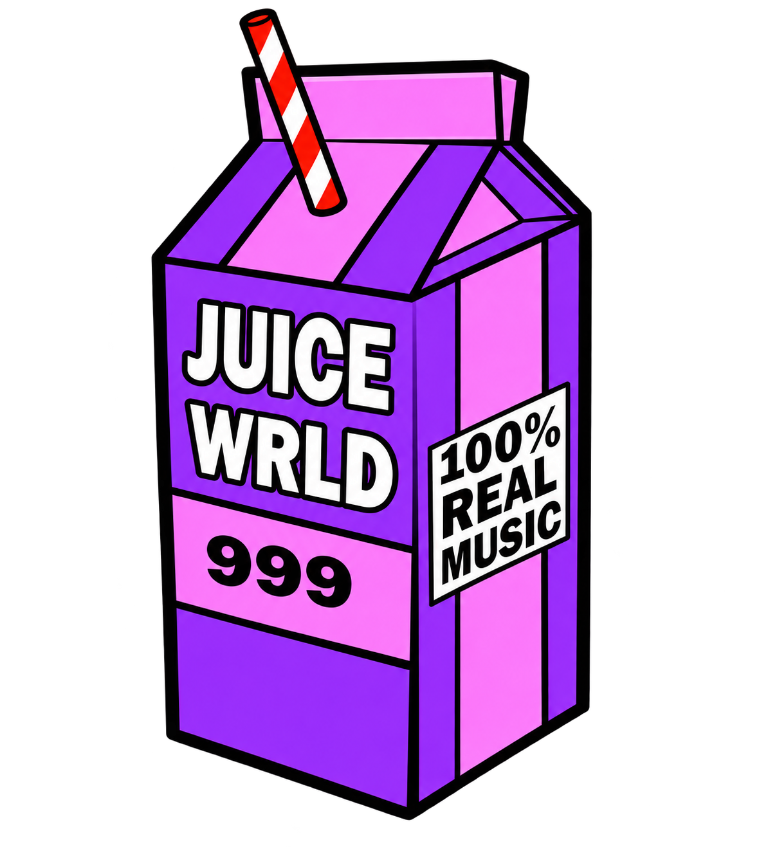

01

Origins
Fanouškovský web o hře Assassin's Creed Origins – starověký Egypt, hlavní hrdina Bayek a svět hry.
HTML / CSS Zobrazit ↗Načítám portfolio
Otevřený novým projektům
Začínající vývojář, který staví rychlé, nápadité a přehledné weby. Každý projekt je další level.
01 — O mně
Studuji obor zaměřený na informační technologie a baví mě především tvorba přehledných a vizuálně zajímavých webů. Každý nový projekt beru jako další level.
Momentálně se soustředím na HTML a CSS, postupně objevuji Python a chci se dále rozvíjet v JavaScriptu.
Dovednosti
02 — Vybrané projekty

Fanouškovský web o hře Assassin's Creed Origins – starověký Egypt, hlavní hrdina Bayek a svět hry.
HTML / CSS Zobrazit ↗
Výrazný hudební web s neonovým vizuálem inspirovaným značkou Juice WRLD 999.
HTML / CSS Zobrazit ↗Tematický web inspirovaný světem Pána prstenů s přehledem postav, míst a příběhu.
HTML / CSS Zobrazit ↗Tematický web inspirovaný hrou Rocket League, zaměřený na výrazný design a barvy.
HTML / CSS Zobrazit ↗Jednoduchý web s přehledem počasí a informacemi podanými srozumitelnou formou.
HTML / CSS / JS Zobrazit ↗Jednoduchý vyhledávací web s čistým rozhraním a rychlým přístupem k vyhledávání.
HTML / CSS Zobrazit ↗Fanouškovský web o Minecraftu s glass morphism designem, dimenzemi a vlastním skinem.
HTML / CSS Zobrazit ↗Fanouškovský web o Realu Madrid s přehledem základních informací a klubové historie.
HTML / CSS Zobrazit ↗03 — Kontakt
Máš nápad na projekt, nebo si jen chceš popovídat o kódu? Napiš mi – odpovídám do 24 hodin.